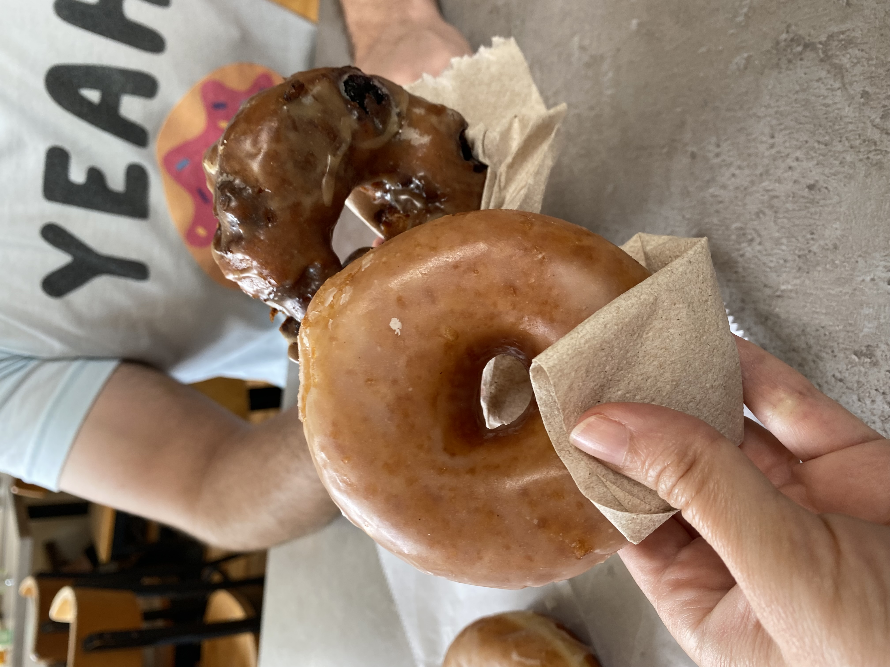
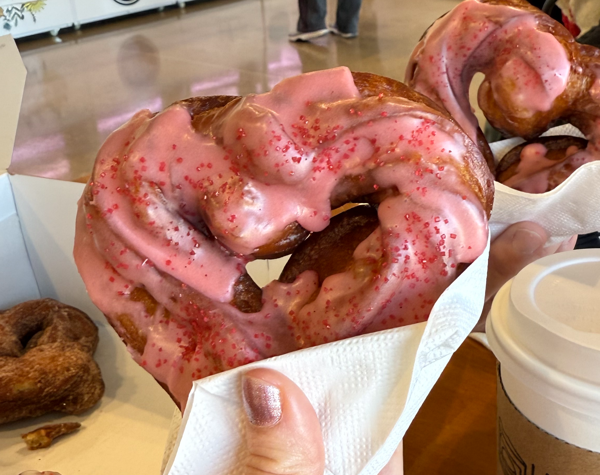

(And Other Things)
We're donut lovers, not donut makers. I can't emphasize this enough. We do not make donuts. Doughnut Days is a website and Instagram account that connects donut lovers to donut makers in Raleigh, North Carolina.
In 2020, when we had time, energy, and a will to live that was unencumbered by corporate America, we started mapping out where one could go grab a donut and experience joy.
In 2021, we shared our research on Reddit and Instagram. We posted our donut maps, got featured in a few articles, and experienced what I assume is peak donut fame. Somewhere along the line though, our pages went dark and we paused all posting.
But like a Futuristic Killer AI Robot and former Governor of California, we're back baby. It's 2026, the Raleigh Donut landscape has changed and we've updated our Raleigh Donut Maps accordingly.
Our goal was and still is to connect donut lovers to donut makers in our communities. And not just our local donut makers, we have no shortage of incredible bakers in our community.
Local bakeries do not survive without our support. Over the last 6 years, we've seen several donut shops and bakeries shut down. Which, although sometimes inevitable, is not what we want. We hope our guides help you explore and enjoy some of our wonderful local spaces.

Our donut maps work differently now. When we first launched our maps, they existed as embedded Google Maps and a loosey-goosey list. Since this is a preferred method for many folks, that is still an option. We also added filters and a handy new search function.
If we missed a great local spot that has donuts, you can use our Donut Map Contact Form to let us know.